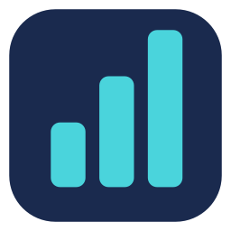

TokenBar를 실행하고 메뉴 막대의 아이콘을 누르세요. 설정 → 로컬 기록 접근에서 Codex의 ~/.codex 폴더와 Claude Code의 ~/.claude 폴더를 각각 선택하세요. 파일 선택창에 숨김 폴더가 표시됩니다. 읽기 권한만 요청합니다.
토큰 수는 이 Mac에 남은 최근 세션 기록을 집계합니다. 한도 사용률은 토큰 수로 추정하지 않고, 제공자가 로컬 기록에 남긴 값만 표시합니다. Codex의 5시간 항목처럼 요금제에 없는 한도는 표시되지 않습니다. Claude의 5시간·주간 한도는 기존 Claude Code statusLine 연동이 .claude/token-bar-rate-limits.json 파일을 갱신하는 경우에만 나타납니다.
상세 화면 하단의 새로고침 아이콘을 누르거나 설정에서 자동 갱신 간격을 바꿀 수 있습니다. 기록은 기기 안에서만 읽습니다. 자세한 내용은 개인정보처리방침을 확인하세요.
GitHub 이슈로 문의해 주세요. 이슈는 공개될 수 있으므로 세션 기록이나 인증 정보를 첨부하지 마세요.